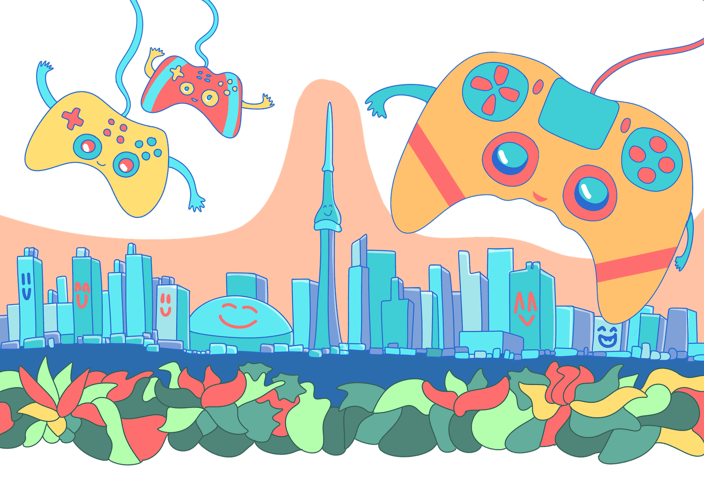
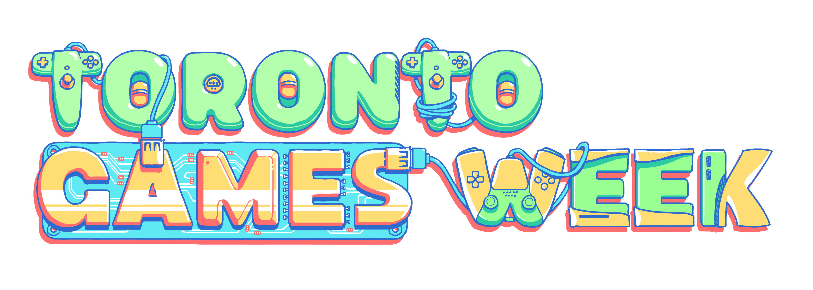
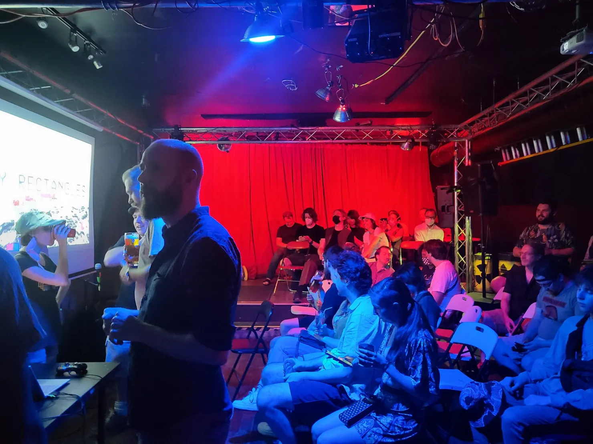
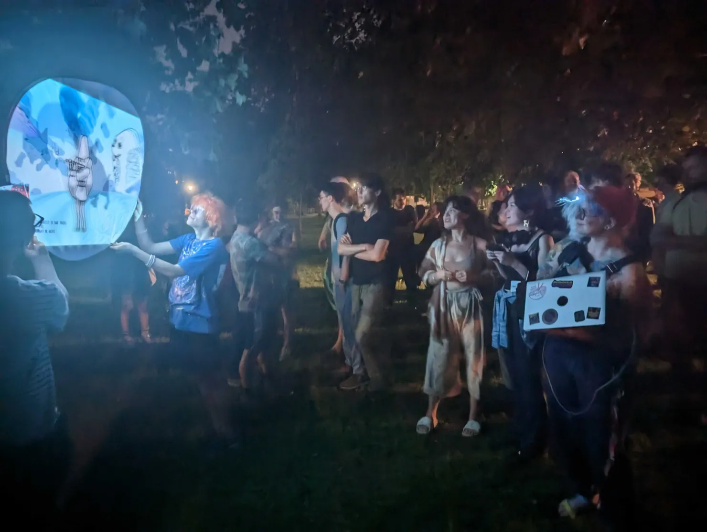
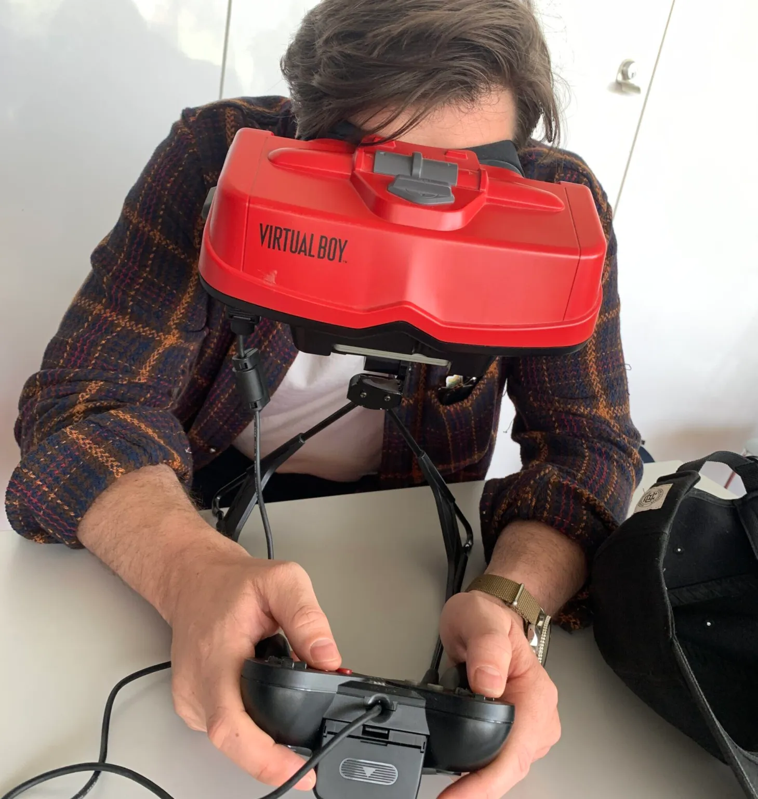
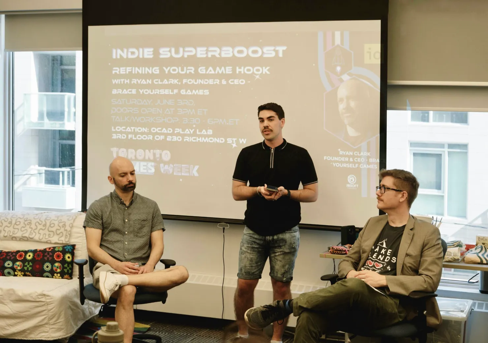
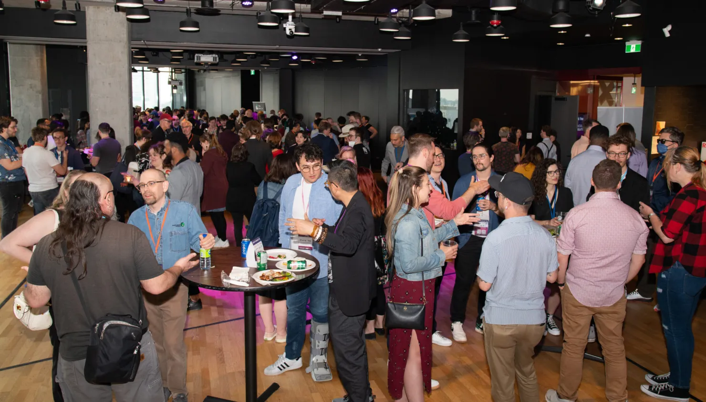
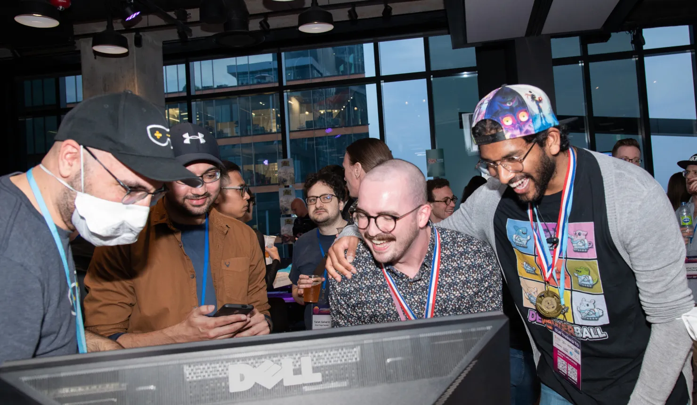
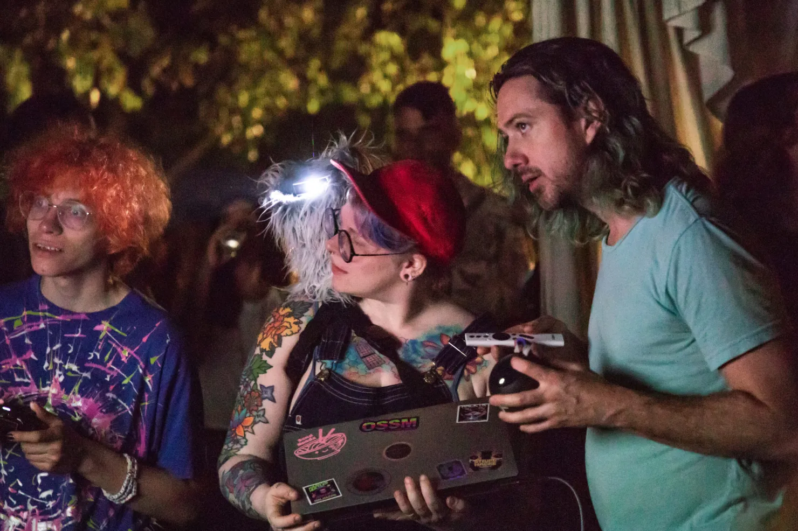

2023 Toronto Games Week Recap
The first ever Toronto Games Week had an incredible response, with over a thousand attendees over the 15 events! TGW 2023 kicked off with a Dirty Rectangles social in the sci-fi punk rock bar, See-scape.

Most of the events were free to the public and three were outdoors, like this pop-up arcade in Trinity Bellwoods Park after dark.

After a talk on game preservation, people got hands on with ancient artifacts of Nintendo.

Ryan Clark did a special Indie Superboost workshop about refining your game hook.

The closing party featured a Toronto Game Jam arcade, mingling and music.

While coordinated by GAIN, Toronto Games Week was a collective game community effort never before seen in the city: there were 12 different organizations and curators running events, 20 sponsors, and 40 volunteers.

Thanks to our organizational partners:
Interactive Ontario
Dirty Rectangles Toronto
Buffer Festival
Interaccess
XP Summit
Hand Eye Society
Stompbox
Game Workers Unite
IGDA Toronto

Thanks to our sponsors:
Alientrap
Cococucumber
Drinkbox Studios
Ontario Creates
City of Toronto
Optillusion
Get Set Games
Digital Media at YorkU
Interactive Ontario
OCAD Digital Futures
game:play Lab
Consulat General De France a Toronto
Continue
XP Gaming
Canada Media Fund
Ubisoft Toronto
Toronto Film School
Artscape Daniels Launchpad
Sardegna Film Commission